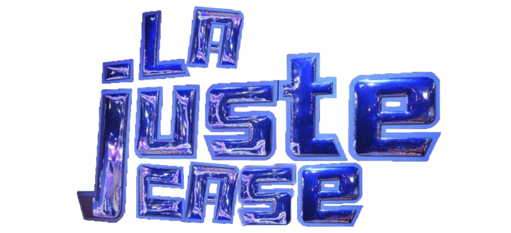
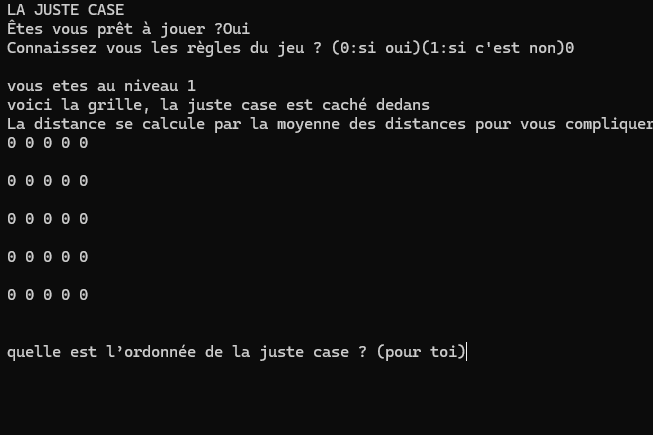

Jeu du Trésors
Description
Dans le cadre de mon apprentissage en programmation Python, j’ai réalisé un projet consistant à créer un jeu inspiré du principe du « juste prix ». L’objectif du programme est de retrouver un trésor caché parmi les cases d’un tableau généré aléatoirement. Le principe est simple : le programme choisit une position secrète dans un tableau (par exemple une grille en deux dimensions), qui représente l’emplacement du trésor. Le joueur doit alors proposer des coordonnées pour tenter de le trouver. À chaque tentative, le programme indique si le joueur se rapproche ou s’éloigne du trésor, à la manière du jeu du « plus ou moins ».

Organisation
Pour développer ce projet, nous avons fonctionner en équipe de trois. Pour ma part, j’ai fait les codes du début à la fin. Alors que mes collègues, elles ont fait tout les tests et les textes mise en contexte. j’ai utilisé les bases du langage Python, notamment les variables, les conditions (if/else), les boucles, ainsi que la gestion des entrées utilisateur. J’ai également travaillé sur la génération aléatoire afin que la position du trésor change à chaque nouvelle partie.
Compétences acquises
Ce premier gros projet m'a appris les premieres bases du python. De plus, j'ai pu à prendre l'oraganisation et le partage de tâches.
Acces au projets
Conclusion
En conclusion, ce projet de jeu de recherche de trésor en Python m’a permis de mettre en pratique les notions fondamentales de programmation de manière ludique et concrète. À travers la création de la grille, la gestion des tentatives et l’implémentation d’indices pour guider le joueur, j’ai pu renforcer ma compréhension des structures conditionnelles, des boucles et de la logique algorithmique. Ce projet m’a également appris à organiser mon code de façon claire et efficace, tout en réfléchissant à l’expérience utilisateur. Il m’a permis de gagner en autonomie et en confiance dans l’utilisation du langage Python.